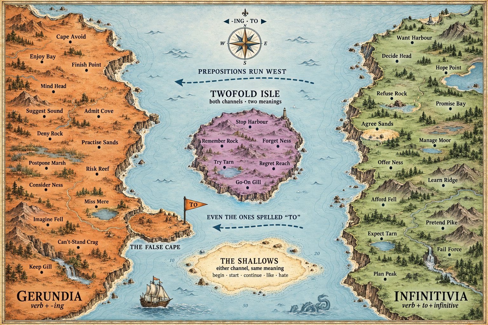
Grammar · A1 to C2 · 19 topics
English grammar, by topic
Every grammar lesson on the site, shelved by the point it teaches. Each topic page explains the rule in plain sentences, then lists the lessons that drill it, by level, free ones first.
- 324lessons
- 19topics
- 71free — no sign-in
The chart is Sailing the Seas of Grammar: gerunds or infinitives, coast by coast →
Plenty of lessons are free, no sign-in. Pro opens every one — plans and prices.
Grammar maps
Sailing the seas of grammar
Grammar drawn as a place: a coast for each pattern, a camp for each tense. Every chart lies rolled on the rack: point at one to unroll it (tap on a phone), then sail or climb to the practice.
Gerundia & Infinitivia · B1 · Free
Gerunds or infinitives, coast by coast
Every harbour on the west coast takes ‑ING, every harbour on the east takes TO + verb, and the island in the middle takes both, with a change of meaning. Learn the coastline and you know which form follows the verb.
Set sailRegularia & Irregularia · A2–B1 · Free
Regular and irregular verbs, island by island
Almost every verb lives on one tidy continent and takes ‑ed, in one of three sounds. The rest live on islands, one family to an island, named after the sound they share: ring rang rung, keep kept, speak spoke spoken.
Set sailCountania & Uncountania · A2–B1 · Free
Countable and uncountable nouns, shore by shore
A chair, two chairs, many chairs live on the west coast; furniture, much furniture, a piece of furniture live on the east. Below deck, the ship’s store cabin and cargo hold show the same cargo with two different words.
Set sailThe Adjective Canal · A2–B1 · Free
Adjective order, lock by lock
A noun travels with its adjectives like a barge down a canal: through eight locks, in one order, never backwards. Opinion first; purpose right next to the noun.
Set sailThe Prefix Archipelago · B1–B2 · Free
Negative prefixes, island by island
Most words sail to the mainland and take un-. The rest live on islands with their own rules: im- before p and m, il- before l, ir- before r, dis- for the opposite, mis- for wrongly.
Set sailSoundings of Frequency · A2 · Free
Adverbs of frequency, by the depth of the sea
How often is how deep: never on the shore, always in the deepest water. The red buoy shows where the word drops anchor in a sentence.
Set sailThe Heights of Register · B2 · Free
Formal and everyday words, by height
Get on the shore, obtain near the summit: one meaning, two heights. The higher you climb, the more formal the writing, from chat and texts to reports and official letters.
Set sailThe Inversion Maelstrom · C1 · Free
Negative inversion, rock by rock
Sail past Never or Not only at the start of a sentence and the auxiliary spins in front of the subject: Never have I seen. No auxiliary? Do appears: Rarely do we sail at night.
Set sailThe Atlantic · B1–B2 · Free
British and American English, shore to shore
Elevator Harbour looks straight across at Lift Harbour. Eight word pairs, the grammar that differs, the words both shores share, and the ones that change meaning at sea.
Set sailThe Return Voyage · B1 · Free
Question tags, there and back
Out on a positive, home on a negative: It’s cold, isn’t it? Every tag crosses the reef in the same boat it set out in. Four lone stacks keep their own rules: I am late, aren’t I?
Set sailThe Grammar Forecast · B1–B2 · Free
Probability, by the weather
How sure are you? Bound to under the storm clouds, might in sun and cloud, won’t under a clear sky. Read the sky, then pick the words, and get will probably and probably won’t the right way round.
Set sailThe Particle Ferries · B1–B2 · Free
Phrasal verbs, line by line
Each little word is a ferry line, each big verb a line that crosses it. Twenty stops, from get up to turn down: the same verb on a new line is a new meaning.
Set sailSherpa Tensing route map · A2–C1 · Free
Every tense, camp by camp
Each tense is a camp on the mountain, in its own colour: the active voice on the way up, the passive on the way down.
Open the map
On the chart table
12 more charts being drawn- The Atlas of THEarticles with place namesB1–B2
- Finished Time & Open Timepresent perfect or past simpleA2–B2
- The Conditional Quadrantsreal and unreal, now and pastB1–C1
- The Harbour of Scalein, on and atA2–B1
- The Voyageprepositions of movementA2–B1
- The ‑ER Coast & the MORE CoastcomparativesA2–B1
- Statia & Actiastate and action verbsB1–B2
- Makeland & Dolandmake or doA2–B2
- Soundings of Certaintymust, might, can’tB2–C1
- The Passive Ferrythe passiveB1–B2
- The Backshift Currentreported speechB1–B2
- The Bridgeslinking wordsB2–C1
The tense code
Twelve tenses, one colour each
A tense is a time and a shape: three times across, four shapes down, and one square more for going to, which is not a tense but is taught as one. Each wears the colour it has on the Sherpa Tensing route map, so once you know the code a lesson’s colour tells you its tense before you read its title.
A square opens the topic page for its tense — the rule in plain sentences, then every lesson on it by level — or, where one lesson stands alone, that lesson. The same colours mark the camps on the Sherpa Tensing route map and the units in Block Camp.
All of them at once Tense review and scored grammar tests — every tense side by side, the time signals that choose between them, and tests that name the lesson to go back to. 31 lessons, 15 free. Open →Every topic
Shelved by the point it teaches
The tenses first, in the order a learner meets them; then the passive, the modals, prepositions, conditionals and the rest, which sit alongside; then the skills built on all of it. Every lesson is a 16:9 deck that opens in the browser — the rule on the slide, then practice, then a speaking task, with a language switcher for the explanations.
Tenses
92 lessons · in teaching order · the colour is the tense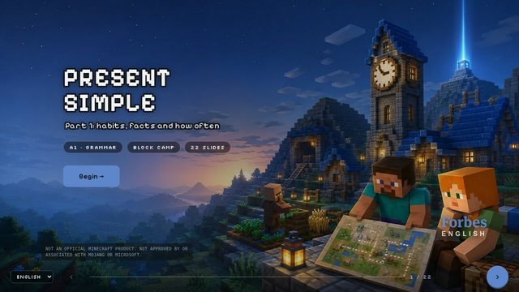
Present Simple
habits, facts, timetables and states, with the third-person -s, questions with do/does, and time signals like always, usually and never.
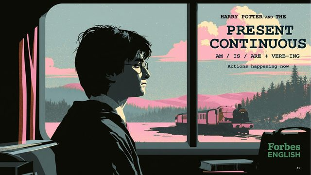
Present Continuous
what is happening now, temporary situations, plans that are already arranged, and the difference from the Present Simple.
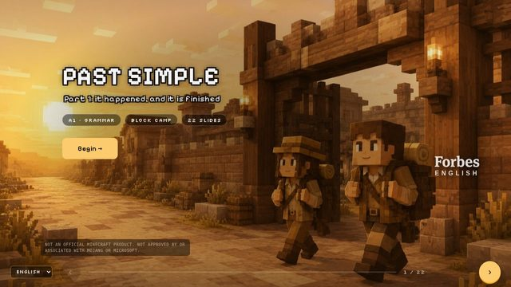
Past Simple
finished actions at a finished time, regular -ed and the irregular verbs, questions and negatives with did, and how it differs from the Present…
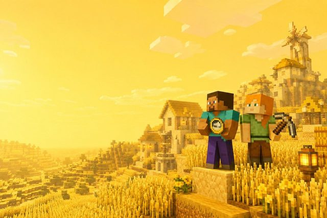
Past Continuous
an action in progress in the past, interrupted by a Past Simple event, with while, when and as.
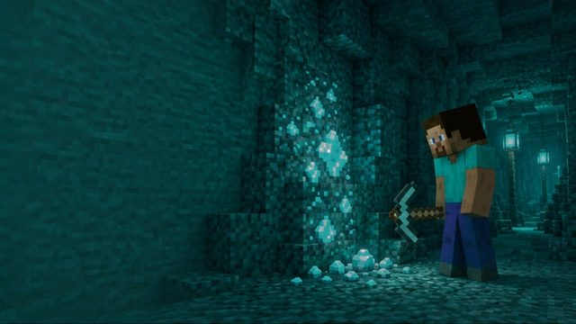
Present Perfect
past actions with a present result, life experience with ever and never, unfinished time with since and for, and the difference from the Past Simple.
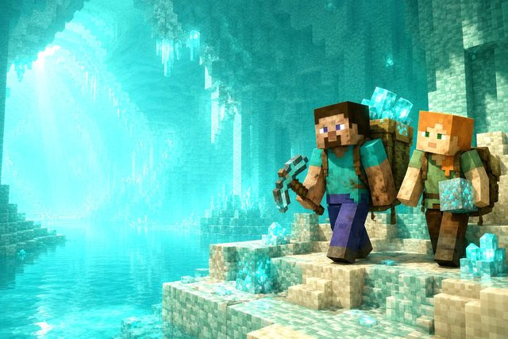
Present Perfect Continuous
have been doing, for how long, and activities whose effects you can still see, against the Present Perfect Simple.
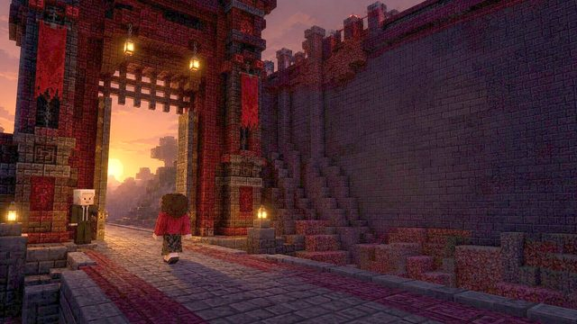
Past Perfect
had done for the earlier of two past events, with by the time, before, after and already, plus the Past Perfect Continuous.
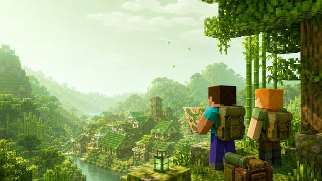
Future Tenses
will for decisions and predictions, going to for plans and evidence, the Present Continuous for arrangements, and the Future Continuous and Future…

Tense Review and Grammar Tests
every tense side by side, the time signals that choose between them, and scored tests that show which lesson to go back to.
Grammar
70 lessons · the points that sit alongside the tenses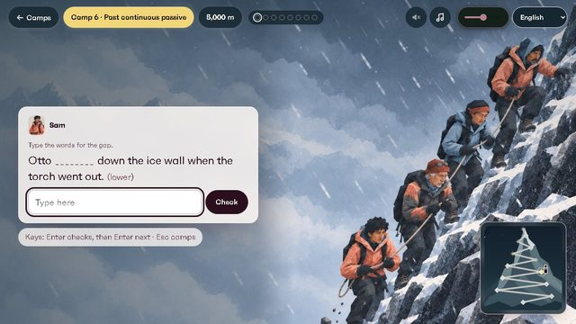
Passive Voice
be + past participle in every tense, when to leave out the agent, by-phrases, and the causative have something done.
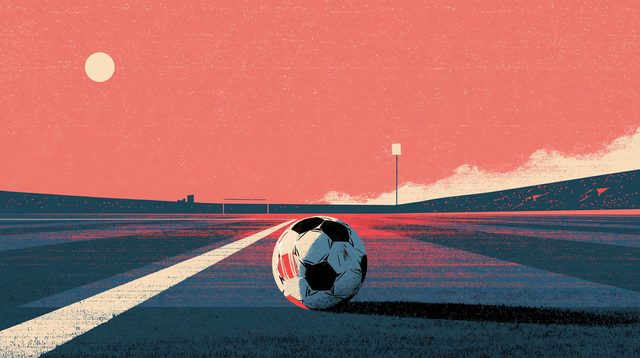
Modal Verbs
must, have to, should, can, could, might and may for obligation, advice, ability and possibility, and the past modals should have and must have.
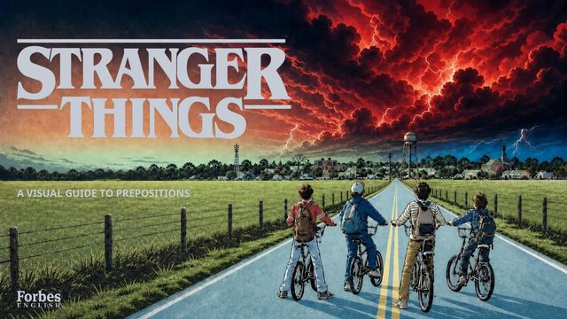
Prepositions
in, on and at for time and place, dependent prepositions after verbs and adjectives, and the advanced pairs that separate B2 from C1.
Gerunds and Infinitives
verbs followed by -ing, verbs followed by to, the ones that take both with a change of meaning, and gerunds as subjects and after prepositions.
Conditionals
zero, first, second and third conditionals, mixed conditionals, and if-clauses in business and argument.
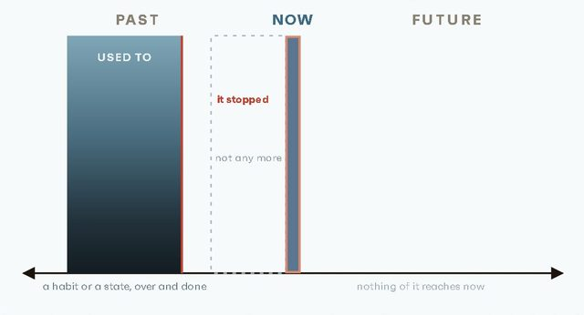
Used To and Be Used To
used to + verb for past habits that have stopped, be used to + -ing for what is familiar, and get used to for what is becoming familiar.
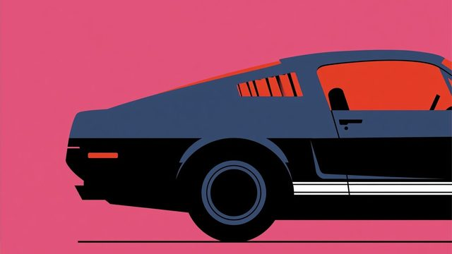
Phrasal Verbs and Collocations
take, put, make and do, separable and inseparable verbs, and the collocations native speakers reach for.
Skills
175 lessons · built on all of it
Business English
meetings, negotiation, presentations, emails, feedback, client conversations and the vocabulary of construction, energy, architecture and design.
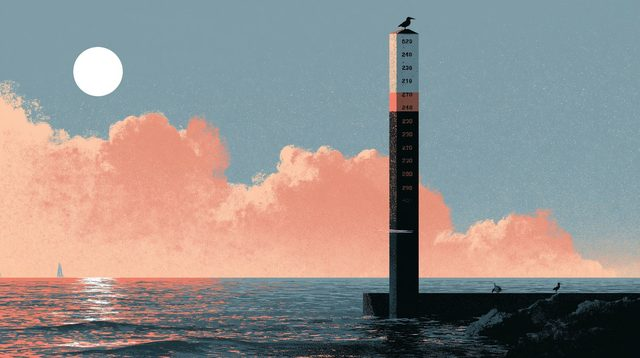
IELTS Academic
Writing, Speaking, Listening, Reading and the vocabulary that feeds them.
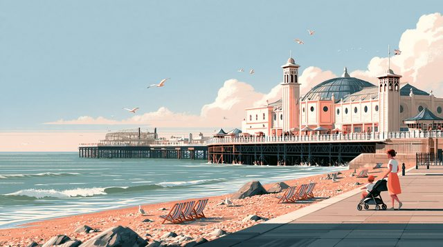
Vocabulary and Topic Lessons
English vocabulary lessons from A1 to C2 built around a subject — football, skiing, hiking, Minecraft, Lego, film, nature, food, architecture — with…
Two routes through the tenses
Or climb them in order
Two courses take the tenses one at a time, in teaching order, with a map that shows where you are. Both wear the colour code above.
-

Sherpa Tensing · A2–C1
Thirteen camps up, nine back down
Every tense as a camp on the way up the mountain, in the active voice, then the same camps in the passive on the way down. 28 lessons, 7 free.
Open the route map → -
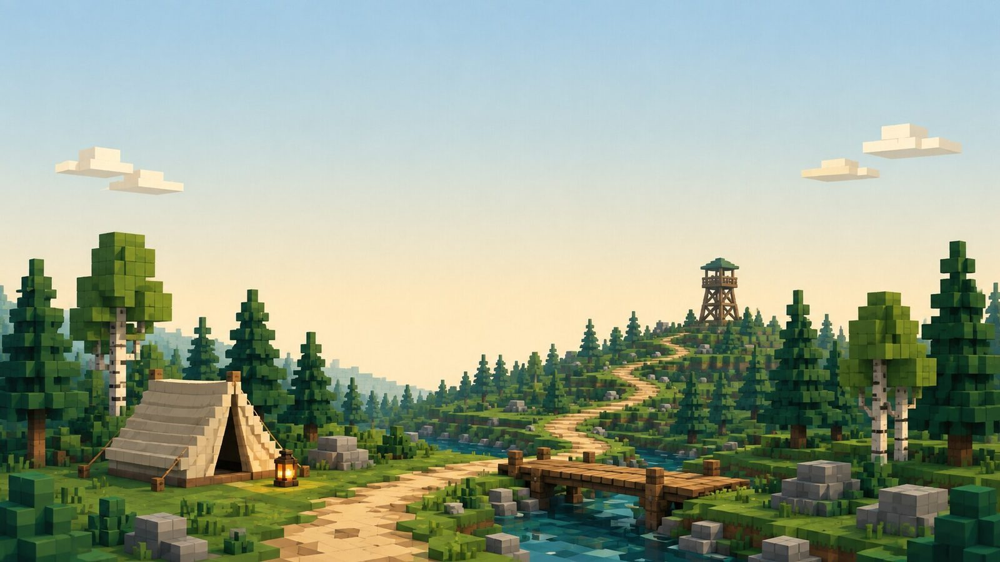
Block Camp · A1–B1
The same trail, block by block
A voxel-built world: the tenses two parts each, the passive on the far side of the watchtower, and branching adventures with a grammar point built into the plot. 42 lessons, 3 free.
Walk into camp →
Teaching this?
Every deck is built to be presented from: big type, one idea a slide, the rule stated before it is practised, and a speaking task at the end. Open a free one on the projector and see whether it suits your room before you pay for anything.
Looking for one lesson in particular?
The library lists every lesson on the site, filterable by level, topic and whether it is free, with a picture for each so a class can pick by eye. Exam English has its own landing page: IELTS Academic, five routes in teaching order.
Not sure of your level?
Six questions a level, then a lesson
The Level Checker is free and adaptive: it tests the tenses from A1 up, stops when it knows, and names the lesson to open first.